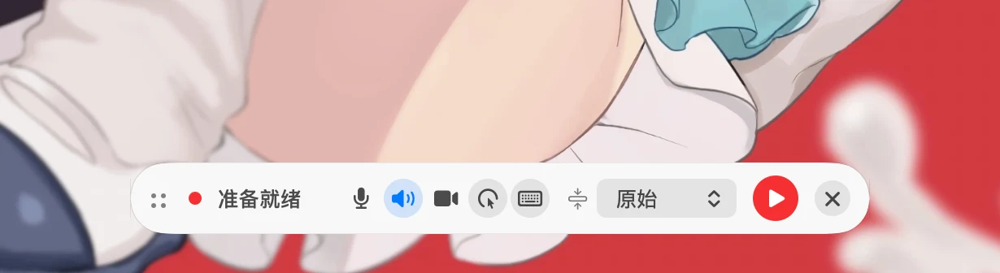
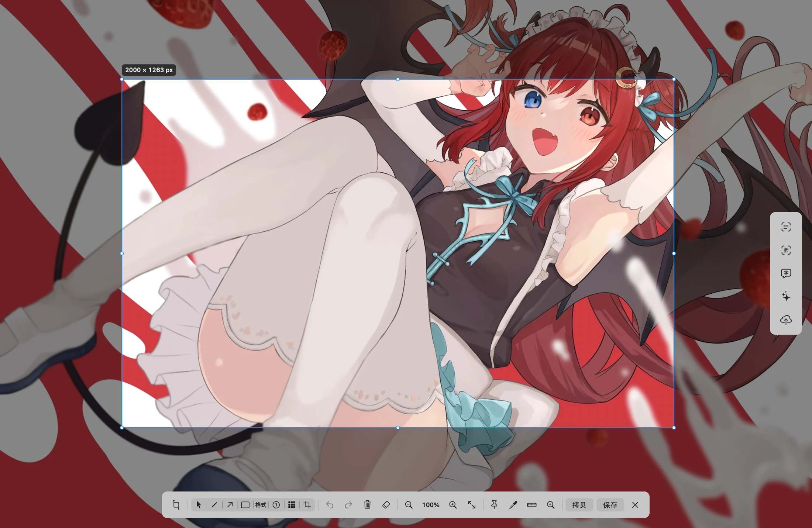
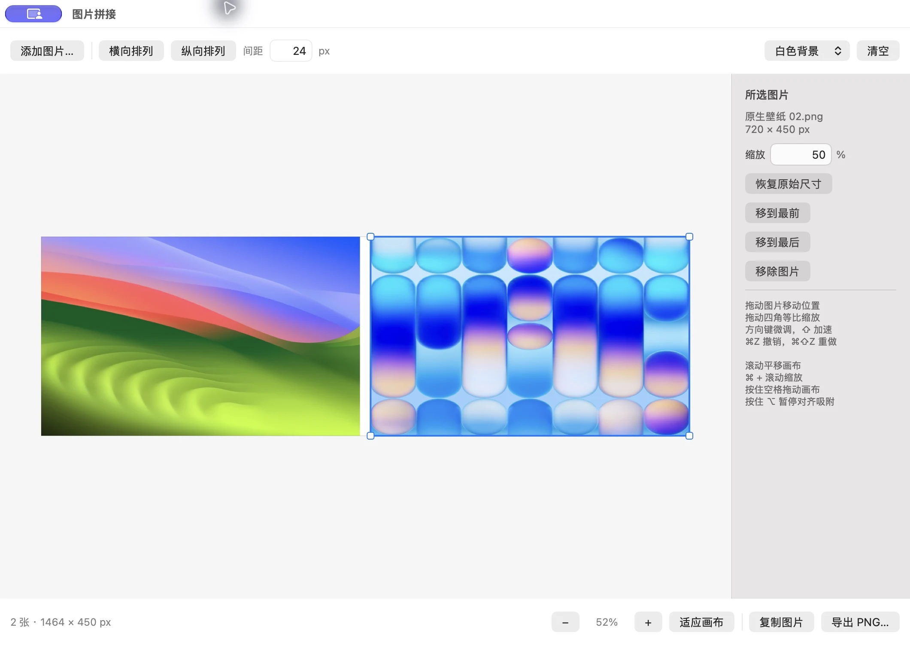
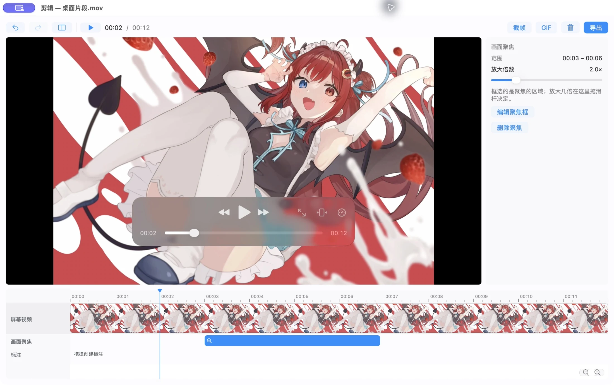
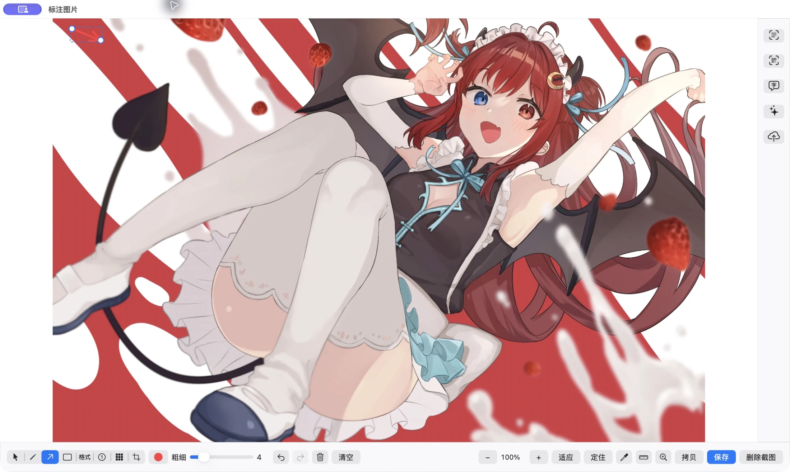
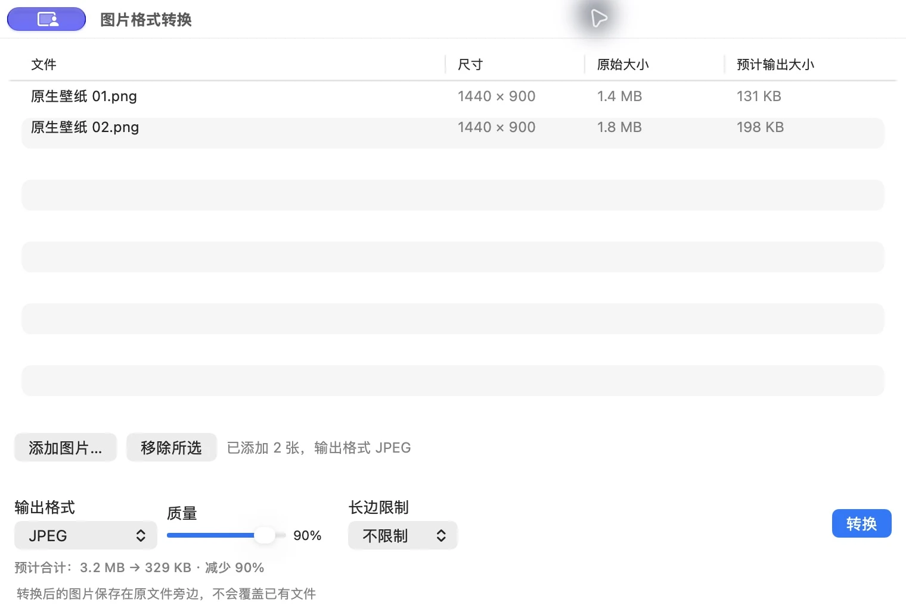

01 / 06
RECORD / 录屏
范围由你定，
节奏也由你定。
全屏、区域或单独窗口录制，多屏可并行各存一份。悬浮控制条就地调整声源与画质，支持暂停、继续和倒计时。控制条本身不进入录像。

真实界面 ↗SAKURA-CAP FOR MAC
一张截图，一段录屏，一个需要被说清楚的细节。
从原地标注、图片拼接到音视频剪辑，顺着你的思路完成。
免费开源 · macOS 13+ · 常驻菜单栏

一个工具。
完整的表达路径。
THE EXPERIENCE / 01
不是把功能堆进一个窗口，而是让每一步自然接上下一步。
截图后仍留在冻结的桌面上，继续调整选框、标注、复制或保存。习惯独立编辑窗口？在设置中随时切换。
拖入图片，自由摆放、等比缩放，靠近边缘时自动吸附。也可以一键横拼、竖拼，设置间距后再微调。

实机截图 · 点击查看大图 ↗在多轨时间轴分割、裁剪和重排片段，添加画面聚焦与视频标注。系统声音和麦克风分别调节，最后导出 MP4、GIF 或关键帧。

实机截图 · 点击查看大图 ↗界面实拍来自 2.9.0 代码构建；桌面素材仅含壁纸，不含其他应用、桌面文件或个人消息。图片拼接为 2.9.0 新增功能。
THE TOOLKIT / 02
从一张截图到一段完整的讲解视频，每个阶段都有恰好的工具。
RECORD / 录屏
全屏、区域或单独窗口录制，多屏可并行各存一份。悬浮控制条就地调整声源与画质，支持暂停、继续和倒计时。控制条本身不进入录像。

真实界面 ↗CAPTURE / 截图
全屏或区域截图，可选独立编辑窗口或原地标注。滚动长截图支持自动滚动、手动滚动和实时预览，拼好后继续标注、复制或保存。
ANNOTATE / 标注
画笔、箭头、矩形、文字、序号、三种马赛克，以及局部放大镜与测量。已有标注可再次选中、移动和修改；也可以开启屏幕标注，不截图直接讲解。

真实界面 ↗STITCH / 图片拼接
多张图片放在同一块画布上，自由拖动、等比缩放和调整前后顺序。横排、竖排与间距一键设置，导出范围自动包住所有图片。
EDIT / 视频编辑
录制完成后进入视频工作台。分割、删除、拖边裁剪和重排，按时间添加聚焦与标注；系统声和麦克风分轨调节，音量段、淡入淡出都能直接编辑。
TOOLS / 日常工具
图片对比、全局取色、音频提取和批量图片格式转换，都在工具菜单里。转换时可调质量和长边，实时预估体积；输出另存，不覆盖已有文件。

真实界面 ↗BEYOND THE PICTURE
取字在本机完成；需要翻译和 AI 时，再连接你配置的服务。
框选文字，用系统 Vision 离线识别并复制；二维码与条形码也能直接读取。文字翻译和屏幕翻译共用服务配置。
把截图交给视觉模型，或先 OCR 再发文字。支持流式聊天、图片附件和会话历史，兼容 OpenAI Chat / Responses 与 Anthropic 接口。
只录系统声音、麦克风，或同时分轨录下两者。暂停后继续，录完进入音频编辑器，裁剪、分割、调音量，再导出 m4a。
OCR 无需联网。翻译、AI 和图床上传会将对应内容发送至你配置的服务，请在使用前确认服务商与隐私设置。
LIGHT BY DESIGN / 03
常驻菜单栏，不占用 Dock。使用 AppKit / SwiftUI 构建原生界面，录制、编码与识别由 ScreenCaptureKit、AVFoundation 和 Vision 支持。无需额外安装运行时；WebP 编码库随应用静态打包。
了解开源项目图片拼接编辑时仅保留缩略预览，导出再逐张读取原图，关闭窗口释放画布。实际资源占用随图片尺寸、录制分辨率和使用中的功能变化。
MAKE SPACE FOR IDEAS / 04
免费、开源，为 Mac 而生。DMG 安装包，下载后将应用拖入「应用程序」，从菜单栏开始。
brew tap yueseqaz/sakura-cap https://github.com/yueseqaz/Sakura-Cap
brew trust yueseqaz/sakura-cap
brew install --cask sakura-capmacOS 13 或更新版本；截图及窗口录制需要 macOS 14+，部分图片格式取决于系统编码能力。预编译安装包适用于 Apple Silicon。应用尚未经过 Apple 公证；首次打开若被拦截，请在「系统设置 → 隐私与安全性」中允许。屏幕录制等权限按需授予。